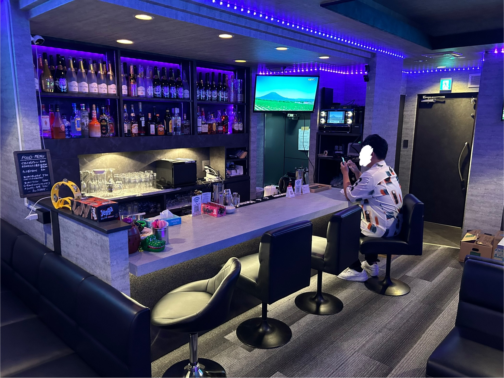

自己紹介
はじめまして！宮崎佑一（みやざきゆういち）と申します！
1996年生まれ。大阪でバー経営をしながら実務の業務改善・効率化を目指して、
日々勉強しながら実務に取り入れております。
日々の勤怠管理・給与計算・売上集計の「めんどくさい」を減らす仕組みを作っています。
実際自分がめんどくさいと思ったことをただ単に潰していってるだけでもあります。笑
実際に自分の店で使っている仕組みだからこそ、
現場で本当に使える形で提供できますので、
同じ悩みを抱えている方がおりましたら、ぜひ一度お話をお聞かせください！


※ 実際に経営・運営している店舗